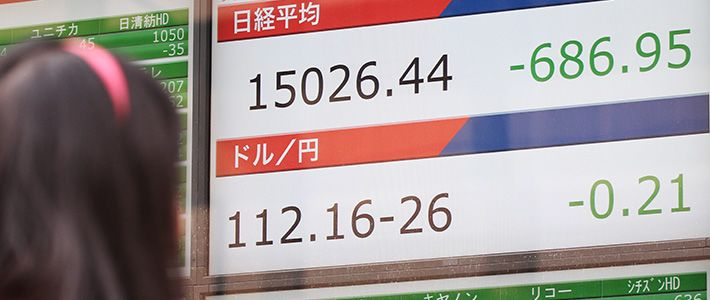
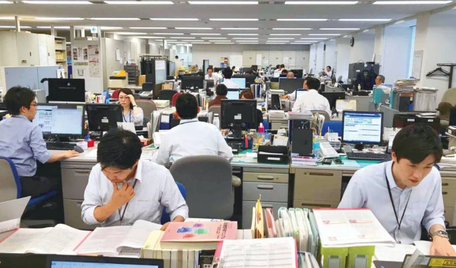
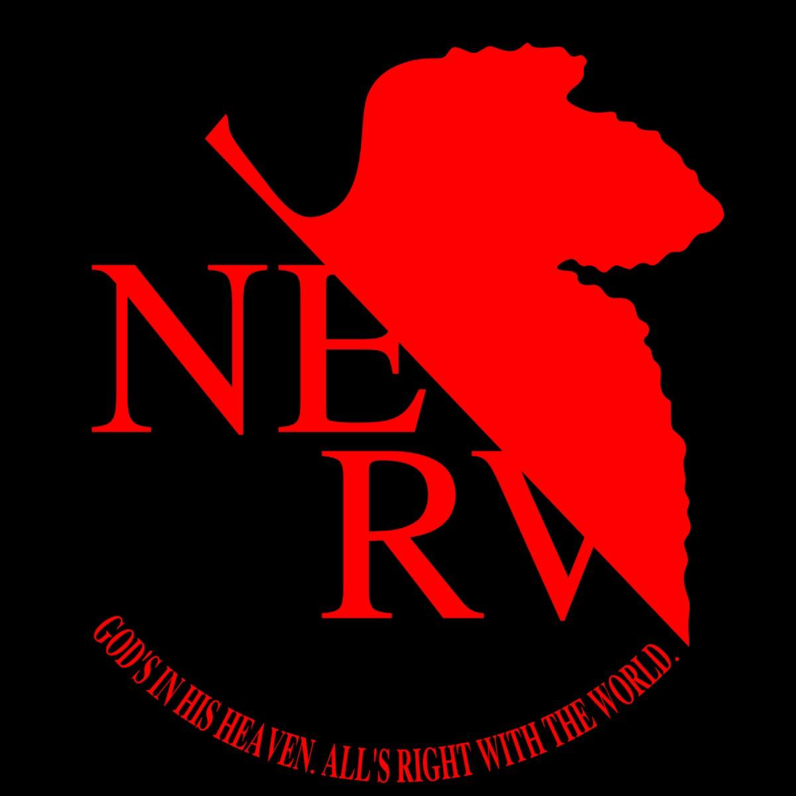
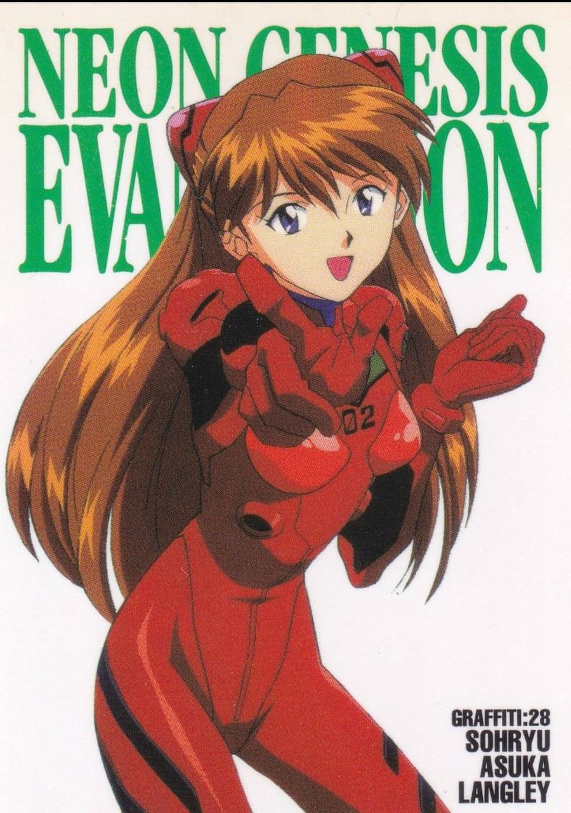
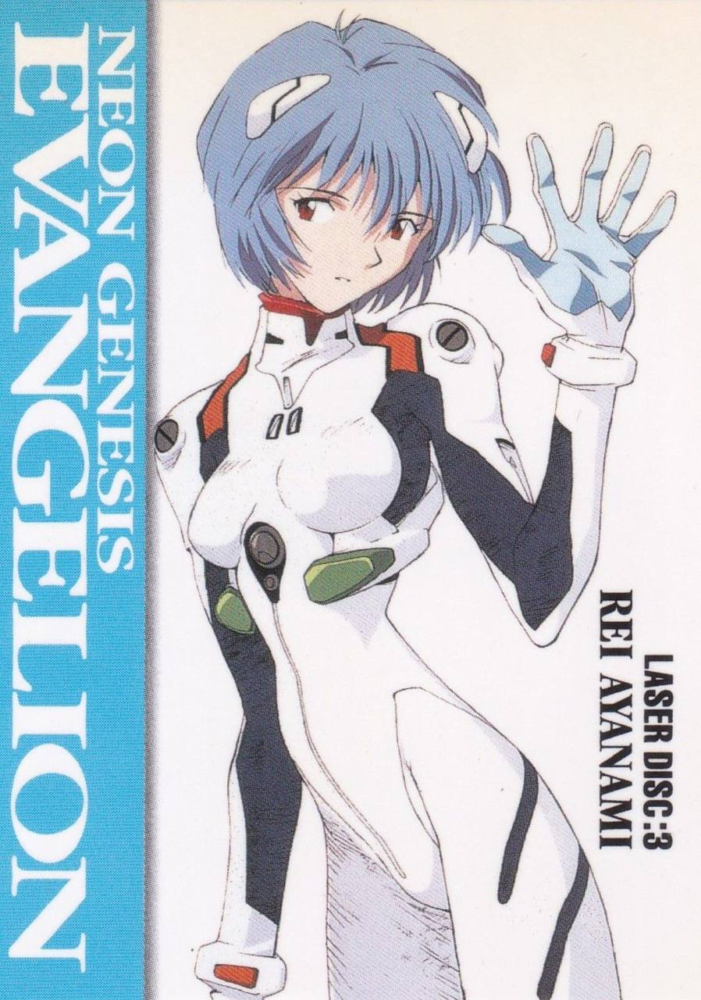
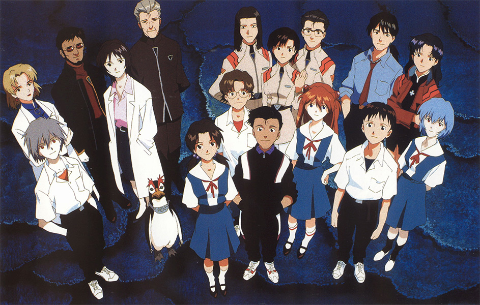

Аниме Neon Genesis Evangelion как культурная репрезентация японского общества в период «потерянного десятилетия» 1990-х годов.
Теоретический раздел
Характеристика выбранного типа медиа
Аниме. Жанр меха, психологическая драма
Целевая аудитория
Изначально подростки 12–18 лет, фактически — молодёжь и взрослые 16–35 лет
Структура
ТВ-сериал - 26 серий
Структурно делится на три условные части:
I. Вводная арка (эпизоды 1–6)
Во время вводной арки происходит знакомство с основными героями Синдзи и Рэй. Объясняются концепты Евы, Ангелов, НЕРВ. Раскрывается конфликт между человечеством и Ангелами
II. Нарастание конфликта (эпизоды 7–16)
Появляется Аска, собирается команда пилотов. Акцент ставится на боях с Ангелами и психологических особенностях персонажей. Начинается завязка с первыми намеками на тайны, проект «Человекоподобное оружие», тайная организация SEELE, происхождение Евы-01 и прочее.III. Психологический и философский блок. Кульминация (эпизоды 17–26)
Происходит углубление и ретроспектива в анализе героев. Разоблачаются планы SEELE и Гендо. Происходит кульминация. Последнние серии становятся еще более экспериментальными.
Особенности визуального языка
Контрастные цвета и сильные тени, частые статичные кадры и паузы, текстовые вставки и резкие монтажные решения, символическая цветовая палитра (красный, синий, оранжевый), визуализация внутреннего мира через пустые пространства и абстракцию.
Практический раздел
Аналитический доклад рассматривает культовое аниме Neon Genesis Evangelion (1995) как культурное отображение общественного настроения в Японии в период «потерянного десятилетия». 1990-е годы характеризуются крахом японской экономики и «Евангелион» становится художественной реакцией на все произошедшее. В работе осуществляются анализ нарратива, символики и персонажей, которые дают представление о национальной идентичности, крахе экономической модели и распаде традиционных социальных связей в тот период.
Анимация приобретает смысл для людей в процессе ее просмотра. Поэтому, когда люди приходят в замешательство от моих тем аниме или не могут понять основной идеи, связь между нами не может быть установлена, потому, что они не подходят для конкретного человека. Поэтому для него будет меньше смысла в увиденном. Должна быть связь, возникающая в момент просмотра, между конкретным человеком и персонажем аниме.Хидэаки Анно, интервью на Anime Expo 1996
Проблема исследования

1990-е годы для Японии стали временем глубокого системного кризиса. Лопнувший экономический пузырь привел к стагнации, росту безработицы и крушению концепции «пожизненного найма». Социальные институты, долгое время считавшиеся незыблемыми, потеряли доверие. В этих условиях аниме Neon Genesis Evangelion за авторством Хидэаки Анно проявляется как культурный феномен, который сумел выразить невысказанные страхи и разочарования целого поколения.
Основная тема исследования.
Историко-экономический контекст
В 1992-2003 годы Япония сталкивается с длительным застоем, беспрецедентным для крупной развитой страны. Его можно назвать последним в условиях глобализации автономным кризисом национальной экономики, так как он не был спровоцирован внешними ударами.
В Японии общепринято называть этот период «потерянным десятилетием» и даже проводить параллели с кризисом в США в 1929-1933 гг. По оценке западных экономистов, если бы в 1992-2002 гг. среднегодовые темпы роста остались на уровне 1980-х гг. (3,7%), то ВВП Японии оказался бы на 1/3 больше. Конечно, Япония не испытала столь глубокого экономического кризиса и 25-процентной безработицы, но последствия оказались даже большими, чем в случае Великой депрессии, где потери измерялись валовым внутренним продуктом за три года.
Проблема растущей безработицы. Согласно данным Министерства внутренних дел и коммуникаций, в период 1990-х гг. уровень безработицы в Японии постепенно увеличивался, достигнув пика в 5,4% в 2002 г. В связи с новыми тенденциями рынка труда, такими как постепенное исчезновение традиционной японской модели пожизненного найма, многие социальные группы, например пожилые работники становятся уязвимы. В то же время, рост нестандартных форм занятости, таких как неполный рабочий день и временная работа, также усложняли для работников поиск стабильной и долгосрочной работы. Все это привело к появлению нового класса работников, известных как «фурита» или «фритер» (яп. フリーター) которые, как правило, являются молодыми работниками занятыми на низкооплачиваемых работах с минимальными гарантиями и возможностями продвижения по службе. Впервые слово было употреблено рекламным журналом в конце 1980-х, сам же термин возник из объединения слов «фрилансер» и «арбайтер». Слово «фрилансер» происходит от английского «freelancer» - человек, который работает над проектами или заданиями на самостоятельной основе без привязки к одной организации или компании. “Арбайтер” (arbeiter), в свою очередь, переводится как “работник” с немецкого языка. Термин фурита стал популярным в 1990-х, когда количество подобных работников увеличилось. По оценкам, в 2000 г. около 10% рабочей силы относилось к категории фурита.

Вдобавок, с увеличением возраста вступления в брак и увеличением продолжительности жизни возникает социальное явление, известное как «паразиты-одиночки» (яп. パラサイト･シングル парасайто сингуру). Это группа молодых людей в возрасте от 20 до 30 лет, не заботящаяся о поиске партнера и посвящающая все свободное время самим себе, пока родители обеспечивают их бесплатным жильем и питанием. Фактически, родители продолжают опекать своих взрослых детей, не вынуждая их жить самостоятельно. В 1999 году паразиты-одиночки насчитывали 10 млн человек.
Основным фактором изменения отношения к трудоустройству у молодежи является желание добиться более приемлемых условий труда. Традиционная корпоративная работа часто предполагает долгий рабочий день и жесткую иерархичную структуру, что часто приводит к отсутствию возможностей для личностного роста. Многие молодые люди стали отвергать такую модель работы и искать возможности, которые позволили бы им заниматься своими увлечениями и достигать лучшего баланса между работой и личной жизнью.

Также в этот период появляются первые сообщения о людях, которые изолировались в своих домах, прекратив всякое участие в работе, образовании и общественной жизни. Эти затворники известны под неологизмом «хикикомори», образованным от японских глаголов hiku (тянуть) и komoru (уединяться), что буквально можно перевести как «ушедшие внутрь». Изначально считалось, что аномалия в основном затрагивает молодых мужчин, которых тихо поддерживают родители, как правило, матери. Но постепенно феномен хикикомори стал гораздо более распространенным, затрагивающим мужчин и женщин практически всех возрастных групп.
Основная тема произведения:
Понимание Евангелиона автором
Хидэаки Анно, в многочисленных интервью признавался, что создавал Евангелион в период депрессии. Он прямо говорил, что сериал стал художественным отражением его внутреннего кризиса. Поэтому главная тема, которую он вкладывал в проект это трудность человеческих отношений и страх близости.
Понимание Евангелиона критиками
Критики часто подчеркивают, что структура сериала, его визуальный язык, резкие монтажные решения и финальные эпизоды создают депрессивное настроение. Евангелион показывает переживания героя не как диагноз, а как опыт каждого человека, когда тот сталкивается с моментами, когда мир кажется пустым и бессмысленным.
Репрезентация японской повседневности в условиях кризиса, через образ города Токио-3

Токио-3 снаружи - ультрасовременный город с блестящими небоскребами. Но на деле, улицы почти всегда пустынны, никаких толп, уличных кафе, играющих детей. Это город-призрак, «потерянный город», чья истинная функция – не жизнь, а оборона. Это прямая параллель с Японией тех лет, внешне – передовая технологическая держава, а внутри – нарастающая пустота, дезориентация и социальная апатия. Экономический рост остановился, а новая цель не найдена. Жизнь в Токио-3 – это жизнь в режиме вечного чрезвычайного положения. Сирены, эвакуации, атаки Ангелов. Для Синдзи, Аски и других героев аниме это становится рутиной. Это гениальная метафора для «потерянного десятилетия»: кризис перестал быть чем-то временным, но он стал новой нормальностью. Люди живут в состоянии постоянной тревоги и неопределенности, которая стала их повседневностью.
Самая яркая деталь – это то, как город буквально прячется под землю при атаке. Небоскребы уходят вниз, открывая пустынный каменный плацдарм для боя, коллективный жест «ухода в себя». Япония 90-х, столкнувшись с непосильными внешними вызовами глобальной экономики, не знала, как на них реагировать. Ответом стал своеобразный социальный эскапизм – попытка спрятаться, переждать, сделать вид, что проблемы нет, пока она бомбит твой город на поверхности. Токио-3 – это город, который при первой же опасности предпочитает скрыться, а не встретить ее лицом к лицу. Прямо как поколение «хикикомори», запирающееся в своих комнатах.
 NERV: Корпоративный ад и кризис отцовства
Представьте себе самую уродливую форму японской корпоративной культуры эпохи «пожизненного найма». NERV — это ее гротескное воплощение.
Информация строго дозирована. Пилоты-дети не знают, зачем воюют. Сотрудники среднего звена — тоже. Решения спускаются сверху вниз без объяснений. Это порождает атмосферу тотального недоверия и паранойи. В 90-е японцы начали терять веру в свои «дзайбацу» (крупные конгломераты) и государство, которые привели их к кризису. NERV — это образ такого дискредитированного института, который продолжает работать, как хорошо смазанная машина, но абсолютно бесчеловечно.
Сотрудники NERV — безликие статисты в форменной одежде. Пилоты Евы — не герои, а расходный материал, «детали», которые можно и нужно заменить в случае поломки. Это доводит до логического абсолюта отношение корпорации к сотруднику: ты ценен только своей функцией. Твои чувства, твоя психика, твоя жизнь — ничто.
А теперь самая важная и болезненная часть. Гэндо Икари — это не просто отец-тиран. Он — олицетворение самой системы NERV в ее отношении к человеку. Его отношения с Синдзи — это квинтэссенция кризиса отцовства и власти в 90-е. Гэндо не воспитывает сына, он им управляет. Он манипулирует, шантажирует эмоциональной похвалой, сталкивает с другими «детальками» (Аской, Рэй) и бросает в самые опасные ситуации, потому что такова логика миссии. В этом угадывается травма поколения отцов, которые были настолько поглощены построением «экономического чуда» 80-х, что совершенно разучились быть отцами. Они видели в своих детях не личностей, а наследников, продолжателей дела. А когда «чудо» рухнуло, им и вовсе нечего было им передать, кроме как холодные методики манипуляции для выживания в системе.
Целевая аудитория Евангелиона
Аниме распространялось посредством показов по телевидению на канале TV Tokyo. Серии выходили еженедельно.
Основные зрители аниме это подростки и молодые взрослые (примерно 15–30 лет), студенты и молодые специалисты.
Сравнение с другими медиа.
Gundam - меха-аниме, рассчитанное в основном на подростков как и Евангелион.Главный акцент здесь на внешних конфликтах и сражениях, когда как в Евангелионе акцент направлен на внутренний мир главных героев.
Dragon Bal - расчитан на младших школьников и детей, достаточно динамично, наполнено эпическими битвами и простой моралью, когда как Евангелион монотонный и неоднозначный, с обилием философских вопросов.
Serial Experiments Lain уже ближе по духу, психологическое и философское аниме для молодых взрослых. Но в сравнении с Евангелионом очень нишевое и экспериментальное.
Персонажи как социальные архетипы «потерянного поколения».
Синдзи — не просто застенчивый подросток, он — архетипический портрет молодого японца 1990-х. Его ключевая характеристика — паралич воли.
«Я должен, но не могу»: Его знаменитая рефлексия и неспособность действовать — это реакция на общество, которое требует от молодежи успеха, но не дает им никаких реальных ориентиров и опор. Экономический пузырь лопнул, «японская мечта» рассыпалась, и поколение Синдзи осталось в идеологическом вакууме. «Я ни на что не гожусь» — не просто подростковый нытье, а экзистенциальная позиция поколения, которое не видит своего места в мире
Пилотирование Евы как «внутренняя эмиграция»: Он соглашается пилотировать не из героизма, а потому, что это единственный способ получить скудную порцию социального признания («меня похвалят»). Его действия — это метафора выполнения бессмысленной работы в системе, которая тебя не ценит.
Страх быть отвергнутым: Его панический страх боли (как физической, так и душевной) и отвержения ведет к стратегии избегания. «Если я ничего не буду делать, меня не будут ругать и мне не будет больно». Это кредо целого поколения, выбравшего социальную изоляцию.
Постоянный уход от ответственности — это не трусость, а рациональный выбор в мире, где любое действие бессмысленно. Его пассивность — это форма молчаливого протеста против системы, которая требует от тебя подвигов, но не дает никаких моральных оснований для этих подвигов.
Аска Лэнгли Сорью: гиперкомпенсации

Если Синдзи представляет уход от проблемы, то Аска — другую крайность: гиперкомпенсацию.
Самоидентификация через успех: Ее самооценка целиком зависит от внешних атрибутов успеха: она пилот-ас, она популярна, она лучшая. Это прямое наследие ценностей эпохи экономического бума 1980-х, когда главной добродетелью была конкурентность.
Ее депрессия и психический срыв — это метафора краха всей системы ценностей «японского экономического чуда» в сознании отдельного человека.
Одиночество в толпе: Ее показная самоуверенность скрывает глубокую экзистенциальную пустоту и тотальное одиночество, это панцирь, под которым скрывается точно такая же экзистенциальная пустота, как у Синдзи Она — продукт общества, где человеческие связи подменены конкуренцией.
Рэй Аянами: Пустота как продукт системы

Рэй — это не человек, а функция. Ее «пустота» — это результат тотальной инструментализации со стороны системы (в лице Гэндо).
Идеальный сотрудник: Она не имеет собственных желаний, целей, эмоций. Она выполняет приказы. Рэй — это кошмарный образ человека, полностью поглощенного корпоративной или государственной машиной.
Ее вопрос «Кто я?» — это вопрос, который в той или иной степени задавало себе все японское общество, потерявшее прежние идеологические ориентиры.
Список литературы
1. Курсов М. В. Социальные перемены в Японии 90-х годов ХХ века. Новые вызовы и новые возможности. Самара: Изд-во ООО «Аспект», 2024.
2. Леонтьева Е. Л. Дефляционный кризис в Японии // Экономический журнал ВШЭ. 2006.
3. Alain Julian. What do Japan’s hikikomori reveal about our lonely world?
